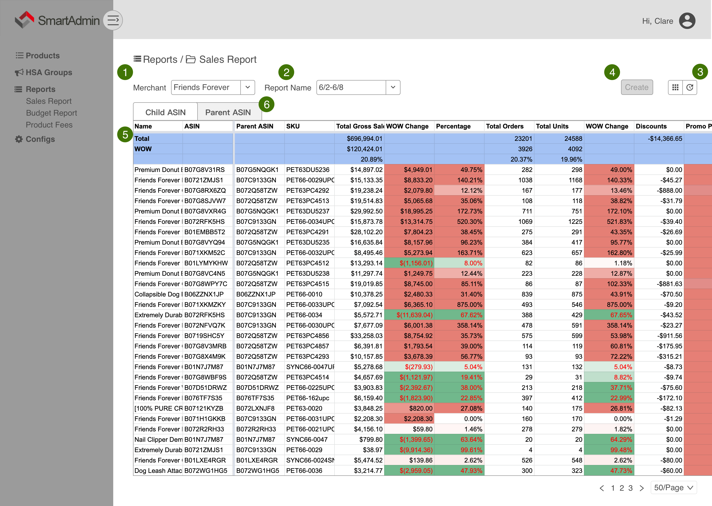
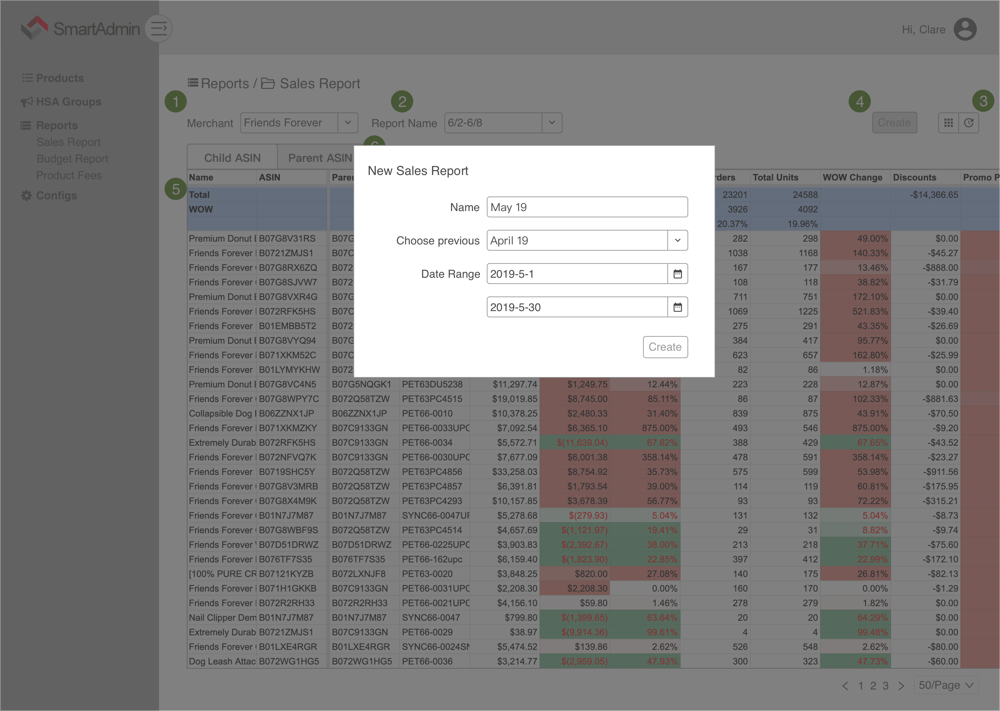
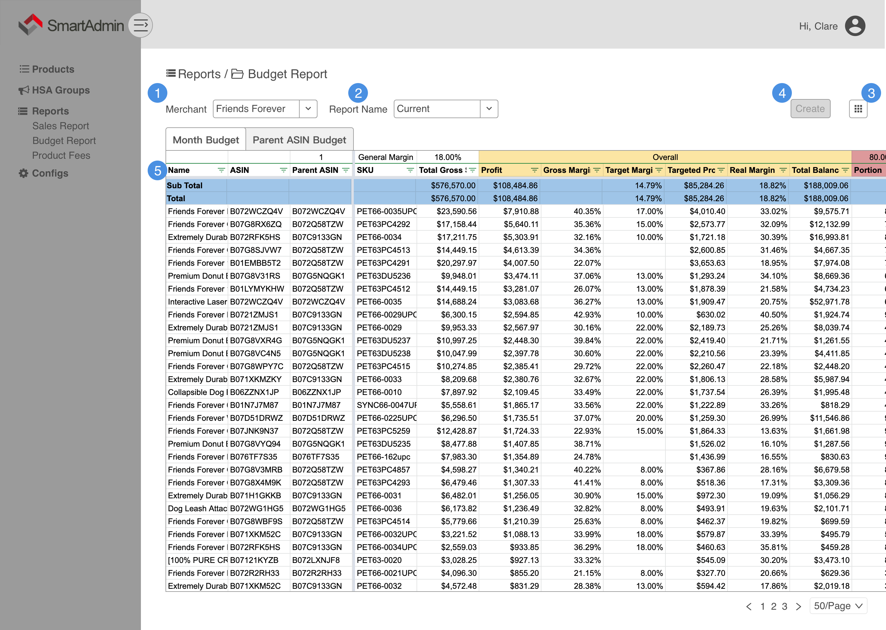
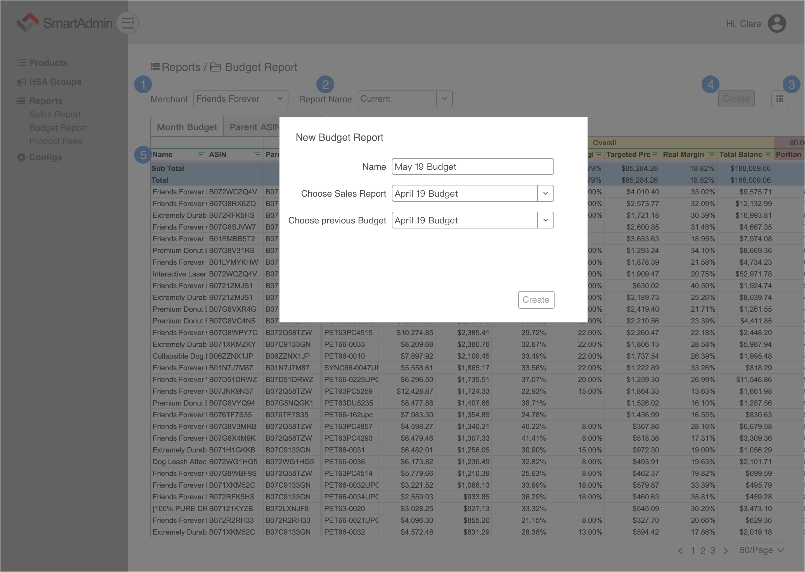

 
维护一份 Product Fee (COGS) 表，用于计算 Product Cost
| SKU | Unit Cost |
|---|
可以单个修改，也可上传 csv/xlsx 文件进行批量修改
根据用户所选的 Merchant 和时间段从 MWS API 获取基础数据（Data），这部分数据不需要向用户展示。
数据的来源有
| Type | Name | API |
|---|---|---|
| General | Name | 根据 SKU 从 Inventory History 中获取 Title |
| General | Merchant | Friends Forever/La Fiore |
| Product | ASIN | 根据 SKU 从 Inventory History 中获取 (Child) ASIN |
| Product | Parent ASIN | 根据 SKU 从 Inventory History 中获取 (Parent) ASIN |
| Product | SKU | 取 ProductAdsReport → sku 与 AllOrdersReport → sku 的并集 |
| Gross | Total Sales | AllOrdersReport → order-status != "Cancelled" 的各个 SKU 的 item-price 之和 |
| Gross | Full Price Gross Sales | 各个 SKU 的 Total Sales - Promo Sales |
| Gross | Shipping | AllOrdersReport → order-status != "Cancelled" 的各个 SKU 的 shipping-price 之和 |
| Gross | Taxes | AllOrdersReport → order-status != "Cancelled" 的各个 SKU 的 item-tax + shipping-tax + gift-wrap-tax 之和 |
| Gross | Amz Withheld Taxes | SettlementReport → amount-type == "ItemWithheldTax" 的各个 SKU 的 amount 之和 |
| Gross | Gift Wrap | AllOrdersReport → order-status != "Cancelled" 的各个 SKU 的 gift-wrap-price 之和 |
| Gross | Reimbursements | SettlementReport → amount-type == "FBA Inventory Reimbursement" && (amount-description == "FREE_REPLACEMENT_REFUND_ITEMS" || amount-description == "REVERSAL_REIMBURSEMENT") 的各个 SKU 的 amount 之和 |
| Gross | Total Orders | AllOrdersReport → order-status != "Cancelled" 的各个 SKU 的条目数之和 |
| Gross | Total Units | AllOrdersReport → order-status != "Cancelled" 的各个 SKU 的 quantity 之和 |
| Gross | Full Price Units | 各个 SKU 的 Total Units - Promo Units |
| Promos | Promo Sales | AllOrdersReport → order-status != "Cancelled" && item-promotion-discount != "NULL" 的各个 SKU 的 item-price 之和 |
| Promos | Discounts | AllOrdersReport → order-status != "Cancelled" 的各个 SKU 的 item-promotion-discount 之和 |
| Promos | Promo Units | AllOrdersReport → order-status != "Cancelled" && item-promotion-discount != "NULL" 的各个 SKU 的 quantity 之和 |
| Refunds | Refunds | SettlementReport → transaction-type == "Refund" && amount-type == "ItemPrice" && amount-description == "Principal" 的各个 SKU 的条目数之和 |
| Refunds | Refund Sales | SettlementReport → transaction-type == "Refund" && (amount-type == "ItemPrice" || amount-type == "Promotion") 的各个 SKU 的 amount 之和 |
| Refunds | Refund Fees | SettlementReport → transaction-type == "Refund" && amount-type == "ItemFees" 的各个 SKU 的 amount 之和 |
| Refunds | Net Refund | SettlementReport → transaction-type == "Refund" && amount-type != "ItemWithheldTax" && (amount-type != "Tax" || amount-type != "ShippingTax" || amount-type != "Shipping" || amount-type != "ShippingChargeback") 的 各个 SKU 的 amount 之和 |
| Organic/PPC Orders | Organic Orders | 各个 SKU 的 Total Orders - All SKUs PPC Orders |
| Organic/PPC Orders | Same SKU PPC Orders | ProductAdsReport 各个 SKU 的 attributedConversions7dSameSKU 之和 |
| Organic/PPC Orders | All SKUs PPC Orders | ProductAdsReport 各个 SKU 的 attributedConversions7d 之和 |
| FBA Fees | Pick & Pack | SettlementReport → amount-description == "FBAPerUnitFulfillmentFee" 拿 AllOrdersReport → order-status != "Cancelled" 的每一个 order-id 去获取各个 SKU 的 amount 之和 |
| FBA Fees | Handling Fee | SettlementReport → amount-description == "FBAPerOrderFulfillmentFee" 拿 AllOrdersReport → order-status != "Cancelled" 的每一个 order-id 去获取各个 SKU 的 amount 之和 |
| FBA Fees | Weight Handling | SettlementReport → amount-description == "FBAWeightBasedFee" 拿 AllOrdersReport → order-status != "Cancelled" 的每一个 order-id 去获取各个 SKU 的 amount 之和 |
| FBA Fees | Variable Cost | 只有 Media items 才有这个费用 |
| FBA Fees | Total FBA Fees | 各个 SKU 的 Pick & Pack + Handling Fee + Weight Handling + Variable Cost |
| Commission | Refer Fees | SettlementReport → transaction-type == "Order" && amount-description == "Commission" 拿 AllOrdersReport → order-status != "Cancelled" 的每一个 order-id 去获取各个 SKU 的 amount 之和 |
| Cost | Product Cost | 各个 SKU 的 COGS[Unit Cost] × Total Units |
| Cost | Ads | ProductAdsReport 各个 SKU 的 cost，根据 SKU 之和 |
| Cost | Total Costs | 各个 SKU 的 Product Cost + Ads |
| Net Profit | Total Gross Sales | 各个 SKU 的 Gross [Total Sales] |
| Net Profit | Amz FBM Postage | SettlementReport → transaction-type == "other-transaction" && amount-description == "Shipping label purchase"，拿 AllOrdersReport → order-status != "Cancelled" 的每一个 order-id 去获取各个 SKU 的 amount 之和 |
| Net Profit | Promo Discounts | Promo[Discount] |
| Net Profit | FBA Fees | 各个 SKU 的 FBAFees[Total FBA Fees] |
| Net Profit | Other Transactions | SettlementReport → transaction-type == "ItemFees" && amount-description == "SalesTaxServiceFee"，拿 AllOrdersReport → order-status != "Cancelled" 的每一个 order-id 去获取各个 SKU 的 amount 之和 |
| Net Profit | Commissions | 各个 SKU 的 Commission |
| Net Profit | Costs | 各个 SKU 的 Cost[Total Cost] |
| Net Profit | Refund Total | 各个 SKU 的 Refund[Net Refund] |
| Net Profit | Net Profit | 各个 SKU 的 Total Gross Sales + Reimbursements - Amz FBM Postage - Promo Discounts - FBA Fees - Other Transactions - Commissions - Costs - Refund Total |
| Stats | ROI | Net Profit / Product Cost |
| Stats | Margin | Net Profit / Total Gross Sales |
| Sessions | Sessions | |
| Sessions | Session % | |
| Sessions | Page Views | |
| Sessions | Page Views % | |
| Sessions | Buy Box | |
| Sessions | Unit Sess % | |
| Currency | USD |
根据用户的选择设定 Previous
根据用户输入命名生成的 Current 报表
第一行的内容为：
Current_line1 = [
'Name', 'ASIN', 'Parent ASIN', 'SKU',
'Total Gross Sales', 'WOW Change', 'Percentage', 'Total Orders', 'Total Units', 'WOW Change',
'Discounts', 'Promo Percentage',
'Net Refund', 'Refund Percentage',
'Ads', 'Ads Percentage',
'ROI', 'WOW Change', 'Profit', 'WOW Change', 'Margin', 'WOW Change',
'Sessions', 'WOW Change', 'Unit Sess %', 'WOW Change'
]第二行计算当前筛选出的内容的 Subtotal
Current_line2 = [
'', '', '', 'Sub Total', Subtotal(Current[Total Gross Sales]), '', '',
Subtotal(Current[Total Orders]), Subtotal(Current[Total Units]), '',
Subtotal(Current[Discount]), Subtotal(Current[Discount])/Subtotal(Current[Total Gross Sales]),
Subtotal(Current[Net Refund]), Subtotal(Current[Net Refund])/Subtotal(Current[Total Gross Sales]),
Subtotal(Current[Ads]), Subtotal(Current[Ads])/Subtotal(Current[Total Gross Sales]), '', '',
Subtotal(Current[Profit]), Subtotal(Current[WOW Change(Profit)]),
Subtotal(Current[Profit])/Subtotal(Current[Total Gross Sales]), '',
Subtotal(Current[Sessions])
]以 SKU 为 Key， 从 Data 和 Previous 查询、计算以下值
| Name | Formula | Error | Format |
|---|---|---|---|
| Name | Data[General][Name] | STRING | |
| ASIN | Data[Product][ASIN] | STRING | |
| Parent ASIN | Data[Product][Parent ASIN] | Data[Product][ASIN] | STRING |
| SKU | Data[Product][SKU] | STRING | |
| Total Gross Sales | Data[Product][Total Sales] | ACCOUNTING | |
| WOW Change(Total Gross Sales) | Current[Total Gross Sales] - Previous[Total Gross Sales] | ACCOUNTING | |
| Percentage | Current[Total Gross Sales][WOW Change]/Previous[Total Gross Salese] | PERCENT | |
| Total Orders | Data[Total Orders] | INTEGER | |
| Total Units | Data[Total Units] | INTEGER | |
| WOW Change(Total Units) | (Current[Total Units]-Previous[Total Units])/Previous[Total Units] | PERCENT | |
| Discount | Data[Promos][Discounts] | ACCOUNTING | |
| Promo Percentage | - Current[Discounts]/Current[Total Gross Sales] | PERCENT | |
| Net Refund | Data[Refunds][Net Refund] | ACCOUNTING | |
| Refund Percentage | - Current[Net Refund]/Current[Total Gross Sales] | PERCENT | |
| Ads | Data[Cost][Ads] | ACCOUNTING | |
| Ads Percentage | - Current[Ads]/Current[Total Gross Sales] | PERCENT | |
| ROI | Data[Stats][ROI] | PERCENT | |
| WOW Change(ROI) | Current[ROI]-Previous[ROI] | PERCENT | |
| Profit | Data[Net Profit][Net Profit] | ACCOUNTING | |
| WOW Change(Profit) | Current[Profit]-Previous[Profit] | ACCOUNTING | |
| Margin | Data[Stats][Margin] | PERCENT | |
| WOW Change(Margin) | Current[Margin]-Previous[Margin] | PERCENT | |
| Sessions | Data[Sessions][Sessions] | INTEGER | |
| WOW Change(Sessions) | (Current[Sessions]-Previous[Sessions])/Previous[Sessions] | PERCENT | |
| Unit Sess % | Data[Sessions][Unit Sess % ] | PERCENT | |
| WOW Change(Unit Sess %) | Current[Unit Sess %]-Previous[Unit Sess %] | PERCENT |
ACCOUNTING = '$#,##0.00;[Red]$(#,##0.00)'
PERCENT = '0.00%;[Red]0.00%'表格下方显示 Total 和 WOW
Current_total = [
'', '', '', 'Total', Sum(Current[Total Gross Sales]), '', '',
Sum(Current[Total Orders]), Sum(Current[Total Units]), '',
Sum(Current[Discount]), Sum(Current[Discount])/Sum(Current[Total Gross Sales]),
Sum(Current[Net Refund]), Sum(Current[Net Refund])/Sum(Current[Total Gross Sales]),
Sum(Current[Ads]), Sum(Current[Ads])/Sum(Current[Total Gross Sales]), '', '',
Sum(Current[Profit]), Sum(Current[WOW Change(Profit)]),
Sum(Current[Profit])/Sum(Current[Total Gross Sales]), '',
Sum(Current[Sessions])
]
Current_wow = [
'', '', '', 'WOW', Current_total[4]-Previous.Current_total[4], '', '',
Current_total[7]-Previous.Current_total[7], Current_total[8]-Previous.Current_total[8],
'', '', '', '', '', '', '', '', '', '', '', '', '',
Current_total[22]-Previous.Current_total[22]
]
Current_last_row = [
'', '', '', '', Current_wow[4]/(Current_total[4]-Current_wow[4]) '', '',
Current_wow[7]/(Current_total[7]-Current_wow[7]),
Current_wow[8]/(Current_total[8]-Current_wow[8]),
'', '', '', '', '', '', '', '', '', '', '', '', '',
Current_wow[22]/(Current_total[22]-Current_wow[22])
]给以下列加上条件格式
conditional_format_req = [
{
'addConditionalFormatRule': {
'rule': {
'ranges': [colunm['WOW Change(Total Gross Sales)']],
'gradientRule': {
'minpoint': {
'color': colors['green'],
'type': 'NUMBER',
'value': '-1000'
},
'midpoint': {
'color': colors['white'],
'type': 'NUMBER',
'value': '0'
},
'maxpoint': {
'color': colors['red'],
'type': 'NUMBER',
'value': '1000'
}
}
},
'index': 0
}
},
{
'addConditionalFormatRule': {
'rule': {
'ranges': [column['Percentage'],
column['WOW Change(Total Units)'], column['WOW Change(ROI)']],
'gradientRule': {
'minpoint': {
'color': colors['green'],
'type': 'NUMBER',
'value': '-20%'
},
'midpoint': {
'color': colors['white'],
'type': 'NUMBER',
'value': '0%'
},
'maxpoint': {
'color': colors['red'],
'type': 'NUMBER',
'value': '20%'
}
}
},
'index': 1
}
},
{
'addConditionalFormatRule': {
'rule': {
'ranges': [column['Promo Percentage']],
'gradientRule': {
'minpoint': {
'color': colors['red'],
'type': 'NUMBER',
'value': '3%'
},
'midpoint': {
'color': colors['pink'],
'type': 'NUMBER',
'value': '6%'
},
'maxpoint': {
'color': colors['orange'],
'type': 'NUMBER',
'value': '10%'
}
}
},
'index': 2
}
},
{
'addConditionalFormatRule': {
'rule': {
'ranges': [column['Refund Percentage']],
'gradientRule': {
'minpoint': {
'color': colors['red'],
'type': 'NUMBER',
'value': '2%'
},
'midpoint': {
'color': colors['orange'],
'type': 'NUMBER',
'value': '5%'
},
'maxpoint': {
'color': colors['green'],
'type': 'NUMBER',
'value': '7%'
}
}
},
'index': 3
}
},
{
'addConditionalFormatRule': {
'rule': {
'ranges': [column[Ads Percentage]],
'gradientRule': {
'minpoint': {
'color': colors['red'],
'type': 'NUMBER',
'value': '3%'
},
'midpoint': {
'color': colors['green'],
'type': 'NUMBER',
'value': '10%'
},
'maxpoint': {
'color': colors['green'],
'type': 'NUMBER',
'value': '20%'
}
}
},
'index': 4
}
},
{
'addConditionalFormatRule': {
'rule': {
'ranges': [column['ROI']],
'booleanRule': {
"condition": {
"type": "NUMBER_LESS_THAN_EQ",
"values": [
{
"userEnteredValue": "30%"
}
]
},
"format": {
"backgroundColor": colors['green']
}
}
},
'index': 5
}
},
{
'addConditionalFormatRule': {
'rule': {
'ranges': [column['Margin']],
'gradientRule': {
'minpoint': {
'color': colors['green'],
'type': 'NUMBER',
'value': '7%'
},
'midpoint': {
'color': colors['pink'],
'type': 'NUMBER',
'value': '15%'
},
'maxpoint': {
'color': colors['red'],
'type': 'NUMBER',
'value': '25%'
}
}
},
'index': 6
}
},
{
'addConditionalFormatRule': {
'rule': {
'ranges': [column['WOW Change(Margin)']],
'gradientRule': {
'minpoint': {
'color': colors['green'],
'type': 'NUMBER',
'value': '-8%'
},
'midpoint': {
'color': colors['white'],
'type': 'NUMBER',
'value': '0%'
},
'maxpoint': {
'color': colors['red'],
'type': 'NUMBER',
'value': '20%'
}
}
},
'index': 7
}
},
{
'addConditionalFormatRule': {
'rule': {
'ranges': [column['Sessions']],
'gradientRule': {
'minpoint': {
'color': colors['green'],
'type': 'NUMBER',
'value': '30'
},
'midpoint': {
'color': colors['light_green'],
'type': 'NUMBER',
'value': '200'
},
'maxpoint': {
'color': colors['white'],
'type': 'NUMBER',
'value': '420'
}
}
},
'index': 8
}
},
{
'addConditionalFormatRule': {
'rule': {
'ranges': [column['WOW Change(Sessions)']],
'gradientRule': {
'minpoint': {
'color': colors['green'],
'type': 'NUMBER',
'value': '-10%'
},
'midpoint': {
'color': colors['white'],
'type': 'NUMBER',
'value': '5%'
},
'maxpoint': {
'color': colors['red'],
'type': 'NUMBER',
'value': '20%'
}
}
},
'index': 9
}
},
{
'addConditionalFormatRule': {
'rule': {
'ranges': [column['Unit Sess %']],
'gradientRule': {
'minpoint': {
'color': colors['orange'],
'type': 'NUMBER',
'value': '5%'
},
'midpoint': {
'color': colors['pink'],
'type': 'NUMBER',
'value': '12.5%'
},
'maxpoint': {
'color': colors['red'],
'type': 'NUMBER',
'value': '20%'
}
}
},
'index': 10
}
}
]

Month Budget
根据用户输入命名生成的 Current Budget Report (CurBudget)
第一行与第二行内容为：
CurBudget_line1 = [''] * 42
CurBudget_line1[2 ] = CurBudget_line1[11]
+ CurBudget_line1[16]
+ CurBudget_line1[21]
+ CurBudget_line1[26]
+ CurBudget_line1[31]
CurBudget_line1[3 ] = 'General Margin'
CurBudget_line1[4 ] = PreBudget_line1[4]
# Admin 可修改
CurBudget_line1[5 ] = 'Overall'
# 合并 CurBudget_line1[5] 至 CurBudget_line1[10]
CurBudget_line1[11] = PreBudget_line1[11]
# Admin 可修改
CurBudget_line1[12] = 'Ads'
# 合并 CurBudget_line1[12] 至 CurBudget_line1[15]
CurBudget_line1[16] = PreBudget_line1[16]
# Admin 可修改
CurBudget_line1[17] = 'Review'
# 合并 CurBudget_line1[17] 至 CurBudget_line1[20]
CurBudget_line1[21] = PreBudget_line1[21]
# Admin 可修改
CurBudget_line1[22] = 'Social'
# 合并 CurBudget_line1[22] 至 CurBudget_line1[25]
CurBudget_line1[26] = PreBudget_line1[26]
# Admin 可修改
CurBudget_line1[27] = 'Promo/Deal'
# 合并 CurBudget_line1[26] 至 CurBudget_line1[30]
CurBudget_line1[31] = PreBudget_line1[31]
# Admin 可修改
CurBudget_line1[32] = 'Photo/Video'
# 合并 CurBudget_line1[32] 至 CurBudget_line1[35]CurBudget_line2 = ['Name', 'ASIN', 'Parent ASIN', 'SKU',
'Total Gross Sales', 'Profit', 'Gross Margin', 'Target Margin', 'Targeted Profit', 'Real Margin', 'Total Balance',
'Portion', 'Budget', 'Actual', 'Gain', 'Balance',
'Portion', 'Budget', 'Actual', 'Gain', 'Balance',
'Portion', 'Budget', 'Actual', 'Gain', 'Balance',
'Portion', 'Budget', 'Actual', 'Gain', 'Balance',
'Portion', 'Budget', 'Actual', 'Gain', 'Balance',
'Ads', 'Review', 'Social', 'Promo', 'Photo', 'Sum']第三行计算当前筛选出的内容的 Subtotal
CurBudget_line3 = [
'', '', 'Sub Total', '', Subtotal(CurBudget[Total Gross Sales]), Subtotal(CurBudget[Profit]), '',
Subtotal(CurBudget[Target Profit])/Subtotal(CurBudget[Total Gross Sales]),
Subtotal(CurBudget[Target Profit]),
Subtotal(CurBudget[Profit])/Subtotal(CurBudget[Total Gross Sales]),
Subtotal(CurBudget[Total Balance]),
'', Subtotal(CurBudget[Budget(Ads)]), Subtotal(CurBudget[Actual(Ads)]), Subtotal(CurBudget[Gain(Ads)]), Subtotal(CurBudget[Balance(Ads)]),
'', Subtotal(CurBudget[Budget(Review)]), Subtotal(CurBudget[Actual(Review)]), Subtotal(CurBudget[Gain(Review)]), Subtotal(CurBudget[Balance(Review)]),
'', Subtotal(CurBudget[Budget(Social)]), Subtotal(CurBudget[Actual(Social)]), Subtotal(CurBudget[Gain(Social)]), Subtotal(CurBudget[Balance(Social)]),
'', Subtotal(CurBudget[Budget(Promo)]), Subtotal(CurBudget[Actual(Promo)]), Subtotal(CurBudget[Gain(Promo)]), Subtotal(CurBudget[Balance(Promo)]),
'', Subtotal(CurBudget[Budget(Photo)]), Subtotal(CurBudget[Actual(Photo)]), Subtotal(CurBudget[Gain(Photo)]), Subtotal(CurBudget[Balance(Photo)]),
'', '', '', '', '', '']以 SKU 为 Key， 从 Previous Sales Report 和 Previous Budget Report 查询、计算以下值
| Name | Formula | Error | Format | Editable |
|---|---|---|---|---|
| Name | PreSales[Name] | STRING | ||
| ASIN | PreSales[ASIN] | STRING | ||
| Parent ASIN | PreSales[Parent ASIN] | PreSales[ASIN] | STRING | |
| SKU | PreSales[SKU] | STRING | ||
| Total Gross Sales | PreSales[Total Sales] | ACCOUNTING | ||
| Profit | PreSales[Profit] | ACCOUNTING | ||
| Gross Margin | PreSales[Promo Percentage] + PreSales[Ads Percentage] + PreSales[Margin] |
PERCENT | ||
| Target Margin | PreBudget[Target Margin] | '' | PERCENT | Yes |
| Target Profit | CurBudget[Total Gross Sales] * (CurBudget[Target Margin] ? CurBudget[Target Margin] : CurBudget_line1[4]) |
ACCOUNTING | ||
| Real Margin | CurBudget[Gross Margin] - (CurBudget[Actual(Ads)] / CurBudget[Total Gross Sales] + CurBudget[Actual(Review)] / CurBudget[Total Gross Sales] + CurBudget[Actual(Social)] / CurBudget[Total Gross Sales] + CurBudget[Actual(Promo)] /CurBudget[Total Gross Sales] + CurBudget[Actual(Photo)] /CurBudget[Total Gross Sales]) |
PERCENT | ||
| Total Balance | CurBudget[Balance(Ads)] + CurBudget[Balance(Review)] + CurBudget[Balance(Social)] + CurBudget[Balance(Promo)] + CurBudget[Balance(Photo)] |
ACCOUNTING | ||
| Portion(Ads) | PreBudget[Portion(Ads)] | '' | PERCENT | Yes |
| Budget(Ads) | (CurBudget[Gross Margin] - (CurBudget[Target Margin] ? CurBudget[Target Margin] : CurBudget_line1[4])) * ((CurBudget[Portion(Ads)] ? CurBudget[Portion(Ads)] : CurBudget_line1[11]) * CurBudget[Total Gross Sales]) |
ACCOUNTING | ||
| Actual(Ads) | PreSales[Ads Percentage] * CurBudget[Total Gross Sales] |
ACCOUNTING | ||
| Gain(Ads) | CurBudget[Budget(Ads)] - CurBudget[Actual(Ads)] |
ACCOUNTING | ||
| Balance(Ads) | CurBudget[Gain(Ads)] + PreBudget[Balance(Ads)] |
ACCOUNTING | ||
| Portion(Review) | PreBudget[Portion(Review)] | '' | PERCENT | Yes |
| Budget(Review) | (CurBudget[Gross Margin] - (CurBudget[Target Margin] ? CurBudget[Target Margin] : CurBudget_line1[4])) * ((CurBudget[Portion(Review)] ? CurBudget[Portion(Review)] : CurBudget_line1[16]) * CurBudget[Total Gross Sales]) |
ACCOUNTING | ||
| Actual(Review) | ACCOUNTING | Yes | ||
| Gain(Review) | CurBudget[Budget(Review)] - CurBudget[Actual(Review)] |
ACCOUNTING | ||
| Balance(Review) | CurBudget[Gain(Review)] + PreBudget[Balance(Review)] |
ACCOUNTING | ||
| Portion(Social) | PreBudget[Portion(Social)] | '' | PERCENT | Yes |
| Budget(Social) | (CurBudget[Gross Margin] - (CurBudget[Target Margin] ? CurBudget[Target Margin] : CurBudget_line1[4])) * ((CurBudget[Portion(Social)] ? CurBudget[Portion(Social)] : CurBudget_line1[21]) * CurBudget[Total Gross Sales]) |
ACCOUNTING | ||
| Actual(Social) | ACCOUNTING | Yes | ||
| Gain(Social) | CurBudget[Budget(Social)] - CurBudget[Actual(Social)] |
ACCOUNTING | ||
| Balance(Social) | CurBudget[Gain(Social)] + PreBudget[Balance(Social)] |
ACCOUNTING | ||
| Portion(Promo) | PreBudget[Portion(Promo)] | '' | PERCENT | Yes |
| Budget(Promo) | (CurBudget[Gross Margin] - (CurBudget[Target Margin] ? CurBudget[Target Margin] : CurBudget_line1[4])) * ((CurBudget[Portion(Promo)] ? CurBudget[Portion(Promo)] : CurBudget_line1[26]) * CurBudget[Total Gross Sales]) |
ACCOUNTING | ||
| Actual(Promo) | ACCOUNTING | Yes | ||
| Gain(Promo ) | CurBudget[Budget(Promo)] - CurBudget[Actual(Promo)] |
ACCOUNTING | ||
| Balance(Promo) | CurBudget[Gain(Promo)] + PreBudget[Balance(Promo)] |
ACCOUNTING | ||
| Portion(Photo) | PreBudget[Portion(Photo)] | '' | PERCENT | Yes |
| Budget(Photo) | (CurBudget[Gross Margin] - (CurBudget[Target Margin] ? CurBudget[Target Margin] : CurBudget_line1[4])) * ((CurBudget[Portion(Photo)] ? CurBudget[Portion(Photo)] : CurBudget_line1[31]) * CurBudget[Total Gross Sales]) |
ACCOUNTING | ||
| Actual(Photo) | ACCOUNTING | Yes | ||
| Gain(Photo) | CurBudget[Budget(Photo)] - CurBudget[Actual(Photo)] |
ACCOUNTING | ||
| Balance(Photo) | CurBudget[Gain(Photo)] + PreBudget[Balance(Photo)] |
ACCOUNTING | ||
| Ads | CurBudget[Portion(Ads)] | PERCENT | ||
| Review | CurBudget[Portion(Review)] | PERCENT | ||
| Social | CurBudget[Portion(Social)] | PERCENT | ||
| Promo | CurBudget[Portion(Promo)] | PERCENT | ||
| Photo | CurBudget[Portion(Photo)] | PERCENT | ||
| Sum | CurBudget[Portion(Ads)] + CurBudget[Portion(Review)] + CurBudget[Portion(Social)] + CurBudget[Portion(Promo)] + CurBudget[Portion(Photo) |
PERCENT |
表格下方显示 Total
CurBudget_total = [
'', '', 'Total', '', Sum(CurBudget[Total Gross Sales]), Sum(CurBudget[Profit]), '',
Sum(CurBudget[Target Profit])/Sum(CurBudget[Total Gross Sales]),
Sum(CurBudget[Target Profit]),
Sum(CurBudget[Profit])/Sum(CurBudget[Total Gross Sales]),
Sum(CurBudget[Total Balance]),
'', Sum(CurBudget[Budget(Ads)]), Sum(CurBudget[Actual(Ads)]), Sum(CurBudget[Gain(Ads)]), Sum(CurBudget[Balance(Ads)]),
'', Sum(CurBudget[Budget(Review)]), Sum(CurBudget[Actual(Review)]), Sum(CurBudget[Gain(Review)]), Sum(CurBudget[Balance(Review)]),
'', Sum(CurBudget[Budget(Social)]), Sum(CurBudget[Actual(Social)]), Sum(CurBudget[Gain(Social)]), Sum(CurBudget[Balance(Social)]),
'', Sum(CurBudget[Budget(Promo)]), Sum(CurBudget[Actual(Promo)]), Sum(CurBudget[Gain(Promo)]), Sum(CurBudget[Balance(Promo)]),
'', Sum(CurBudget[Budget(Photo)]), Sum(CurBudget[Actual(Photo)]), Sum(CurBudget[Gain(Photo)]), Sum(CurBudget[Balance(Photo)]),
'', '', '', '', '', '']
~~~~Parent ASIN Budget
通过 Current Budget Report (CurBudget) 生成 Parent ASIN Budget (PAsinBudget)
第一行与第二行内容为：
PAsinBudget_line1 = [''] * 25
PAsinBudget_line1[1] = CurBudget_line1[4]
PAsinBudget_line1[2] = 'Overall'
# 合并 PAsinBudget_line1[2] 至 PAsinBudget_line1[4]
PAsinBudget_line1[5] = 'Ads'
# 合并 PAsinBudget_line1[5] 至 PAsinBudget_line1[8]
PAsinBudget_line1[9] = 'Review'
# 合并 PAsinBudget_line1[9] 至 CurBudget_line1[12]
PAsinBudget_line1[13] = 'Social'
# 合并 PAsinBudget_line1[13] 至 CurBudget_line1[16]
PAsinBudget_line1[17] = 'Promo/Deal'
# 合并 PAsinBudget_line1[17] 至 PAsinBudget_line1[20]
PAsinBudget_line1[21] = 'Photo/Video'
# 合并 PAsinBudget_line1[21] 至 PAsinBudget_line1[24]PAsinBudget_line2 = ['Parent ASIN', 'Gross Margin', 'Balance', 'Net Target', 'Real Net',
'Ads', 'Blance', 'Projected', 'Real',
'Review', 'Blance', 'Projected', 'Real',
'Social', 'Blance', 'Projected', 'Real',
'Promo/Deal', 'Blance', 'Projected', 'Real',
'Photo/Video', 'Blance', 'Projected', 'Real']第三行计算当前筛选出的内容的 Subtotal
PAsinBudget_line3 = ['', 'Sub Total', Subtotal(PAsinBudget[Balance(Overall)]), '', '',
'', Subtotal(PAsinBudget[Balance(Ads)]), '', '',
'', Subtotal(PAsinBudget[Balance(Review)]), '', '',
'', Subtotal(PAsinBudget[Balance(Social)]), '', '',
'', Subtotal(PAsinBudget[Balance(Promo)]), '', '',
'', Subtotal(PAsinBudget[Balance(Photo)]), '', '']以 Parent ASIN 为 Key，查询、计算以下值
| Name | Formula | Format |
|---|---|---|
| Parent ASIN | CurBudget[Parent ASIN] | STRING |
| Gross Margin | Sum(CurBudget[Profit])/Sum(CurBudget[Total Gross Sales]) + PAsinBudget[Real(Ads)] + PAsinBudget[Real(Review)] + PAsinBudget[Real(Social)] + PAsinBudget[Real(Promo)] + PAsinBudget[Real(Photo)] |
PERCENT |
| Balance (Overall) | PAsinBudget[Balance(Ads)] + PAsinBudget[Balance(Review)] + PAsinBudget[Balance(Social)] + PAsinBudget[Balance(Promo)] + PAsinBudget[Balance(Photo)] |
ACCOUNTING |
| Net Target | Sum(CurBudget[Target Profit]) / Sum(CurBudget[Total Gross Sales]) |
PERCENT |
| Real Net | Sum(CurBudget[Profit]) / Sum(CurBudget[Total Gross Sales]) |
PERCENT |
| Ads | Sum(CurBudget[Actual(Ads)]) | ACCOUNTING |
| Blance(Ads) | Sum(CurBudget[Blance(Ads)]) | ACCOUNTING |
| Projected(Ads) | Sum(CurBudget[Budget(Ads)]) / Sum(CurBudget[Total Gross Sales]) |
PERCENT |
| Real(Ads) | Sum(CurBudget[Actual(Ads)]) / Sum(CurBudget[Total Gross Sales]) |
PERCENT |
| Review | Sum(CurBudget[Actual(Review)]) | ACCOUNTING |
| Blance(Review) | Sum(CurBudget[Blance(Review)]) | ACCOUNTING |
| Projected(Review) | Sum(CurBudget[Budget(Review)]) / Sum(CurBudget[Total Gross Sales]) |
PERCENT |
| Real(Review) | Sum(CurBudget[Actual(Review)]) / Sum(CurBudget[Total Gross Sales]) |
PERCENT |
| Social | Sum(CurBudget[Actual(Social)]) | ACCOUNTING |
| Blance(Social) | Sum(CurBudget[Blance(Social)]) | ACCOUNTING |
| Projected(Social) | Sum(CurBudget[Budget(Social)]) / Sum(CurBudget[Total Gross Sales]) |
PERCENT |
| Real(Social) | Sum(CurBudget[Actual(Social)]) / Sum(CurBudget[Total Gross Sales]) |
PERCENT |
| Promo/Deal | Sum(CurBudget[Actual(Promo)]) | ACCOUNTING |
| Blance(Promo) | Sum(CurBudget[Blance(Promo)]) | ACCOUNTING |
| Projected(Promo) | Sum(CurBudget[Budget(Promo)]) / Sum(CurBudget[Total Gross Sales]) |
PERCENT |
| Real(Promo) | Sum(CurBudget[Actual(Promo)]) / Sum(CurBudget[Total Gross Sales]) |
PERCENT |
| Photo/Video | Sum(CurBudget[Actual(Photo)]) | ACCOUNTING |
| Blance(Photo) | Sum(CurBudget[Blance(Photo)]) | ACCOUNTING |
| Projected(Photo) | Sum(CurBudget[Budget(Photo)]) / Sum(CurBudget[Total Gross Sales]) |
PERCENT |
| Real(Photo) | Sum(CurBudget[Actual(Photo)]) / Sum(CurBudget[Total Gross Sales]) |
PERCENT |
表格下方显示 Total
PAsinBudget_total = ['', 'Total', Sum(PAsinBudget[Balance(Overall)]), '', '',
'', Sum(PAsinBudget[Balance(Ads)]), '', '',
'', Sum(PAsinBudget[Balance(Review)]), '', '',
'', Sum(PAsinBudget[Balance(Social)]), '', '',
'', Sum(PAsinBudget[Balance(Promo)]), '', '',
'', Sum(PAsinBudget[Balance(Photo)]), '', '']Generate SP file 模块空格内容自动填充
以下 Sum() 指的是取所有选中产品对应值之和
Margin
在最近一个月的 Data 中查询并计算：
= Sum(total sales - net refund - refer fees - product cost - shipping cost)
/ Sum(total sales) Rank 默认18
Default Bid 默认以下两者中的较大值
Reference 1 (from Sales Report):
= (Total Gross Sales / Total Units)
×（Margin + Ads Percentage)
× Average ConversionReference 2 (from PPC Report):
Sum(Ads)/Sum(clicks)